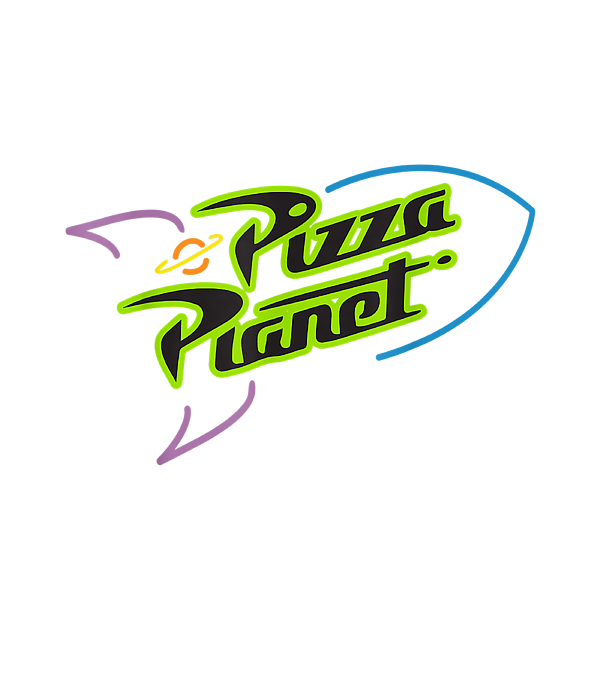

<nav class="navbar navbar-expand-sm navbar-light bit-navbar">
    <div class="container">
      <a class="navbar-brand" routerLink="/"
        ></a>
      <button
        class="navbar-toggler"
        type="button"
        data-bs-toggle="collapse"
        data-bs-target="#navbarNavDropdown"
        aria-controls="navbarNavDropdown"
        aria-expanded="false"
        aria-label="Toggle navigation"
      >
        <span class="navbar-toggler-icon"></span>
      </button>
  
      <div class="collapse navbar-collapse" id="navbarNavDropdown">
        <ul class="navbar-nav ms-auto">
          <li class="nav-item">
            <a
              class="nav-link mx-2 active"
              aria-current="page"
              href="https://bit.institute/"
            >
            My Orders</a
            >
          </li>
          <li class="nav-item">
            <a class="nav-link mx-2 active" aria-current="page" routerLink="/">
              Inicio Page</a
            >
          </li>
          <a
          
            routerLink="studentProfile"
            mat-button
            class="bit-title-second-nav"
            ></a
          >
          <button
            class="bit-login-style"
            routerLink="/login"
          >
            <span>Login</span>
            <svg viewBox="0 0 13 10" height="10px" width="15px">
              <path d="M1,5 L11,5"></path>
              <polyline points="8 1 12 5 8 9"></polyline>
            </svg>
          </button>
        </ul>
      </div>
    </div>
  </nav>
  
  
  